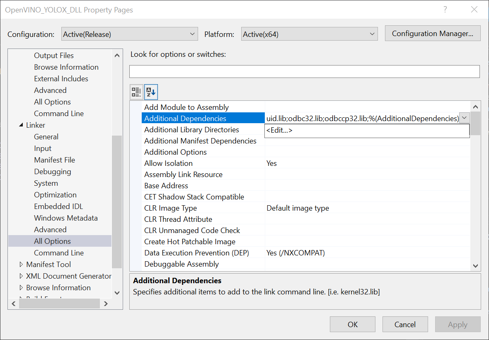

OpenVINO Object Detection in the Unity Editor (Outdated)
8/11/2022:
- This tutorial is outdated. Use the new version at the link below.
- End-to-End Object Detection for Unity With IceVision and OpenVINO Pt. 1
Previous: Part 3
Overview
In this follow-up to the YOLOX tutorial, we will update the OpenVINO and Unity code so that we can use the plugin directly in the Unity Editor. We will also make some additional changes to remove the need to manually move any files when building the Unity project.
Install New OpenVINO Version
To use the OpenVINO plugin inside the Unity editor, we will first update the OpenVINO project to OpenVINO 2021.4.2. This resolves the dependency conflict mentioned in the last part of this tutorial series.
New users can register for OpenVINO or download it directly from the links below.
Update OpenVINO Project
The code from the previous tutorial can be found at the repository linked below.
Once the download is complete, open the OpenVINO_YOLOX_DLL folder and double-click the OpenVINO_YOLOX_DLL.sln file to open the project in Visual Studio.
Update Include Directories
We need to tell Visual Studio where the new version of OpenVINO is located. In the Solution Explorer panel, right-click the project name.

Select the Properties in the popup menu.

In the Properties Window, open the C++ dropdown and click on All Options. Select the Additional Include Directories section and click on <Edit..> in the dropdown.

Replace the existing Include Directories with the ones below.
• C:Files (x86)_2021.4.752_tools_engine • C:Files (x86)_2021.4.752Update Link Libraries
Next, open the Linker dropdown in the Properties window and select All Options. Scroll up to the top of the All Options section and select Additional Dependencies.

Replace the existing Link Libraries with the ones below.
• C:Files (x86)_2021.4.752_tools_engine*
• C:Files (x86)_2021.4.752*
Back in the Properties window, click the Apply button and close the window.
Replace GetAvailableDevices()
We will replace the existing GetAvailableDevices() method with a new method called FindAvailableDevices(). We need to use a different method than storing the available device names in a comma separated string which has resulted in some string conversion issues in Unity.
First, we will make sure the available_devices vector is empty.
We will then iterate through each device name returned from ie.GetAvailableDevices() and add any CPU or GPU compute devices to available_devices.
We will skip any devices that contain GNA as the Gaussian & Neural Accelerator only supports a limited set of layer types.
We will still reverse available_devices so any GPU devices are selected first.
The method to set the location for the cache directory has changed from previous versions of OpenVINO. Now, we can set the directory for all GPUs using a single line.
Lastly, we will return the final number of available compute devices to Unity.
Code:
// Returns an unparsed list of available compute devices
DLLExport int FindAvailableDevices(std::string* device_list) {
available_devices.clear();
for (auto&& device : ie.GetAvailableDevices()) {
if (device.find("GNA") != std::string::npos) continue;
available_devices.push_back(device);
}
// Reverse the order of the list
std::reverse(available_devices.begin(), available_devices.end());
// Configure the cache directory for GPU compute devices
ie.SetConfig({ {CONFIG_KEY(CACHE_DIR), "cache"} }, "GPU");
return available_devices.size();
}Create GetDeviceName()
Next, we will create a function that returns the name for a device at a given index in available_devices. In Unity, we will use this function to iterate through the devices in available_devices. This will help us avoid the string conversion issues mentioned above.
Code:
DLLExport std::string* GetDeviceName(int index) {
return &available_devices[index];
}Create FreeResources()
The memory used for the variables might not get automatically freed when running the project in the Unity Editor. This can cause issues when entering Play mode in the editor multiple times. To avoid this, we will manually clear the memory for the vectors by calling the clear() method for each.
Code:
DLLExport void FreeResources() {
available_devices.clear();
grid_strides.clear();
proposals.clear();
picked.clear();
}Now we can build the project as we did in the previous tutorial. Open the Build menu at the top of the Visual Studio window and click Build Solution.
Navigate to the x64 build folder in the File Explorer and open the Release child folder. Inside, we can see the new OpenVINO_YOLOX_DLL.dll file.
Gather Dependencies
We need to gather the dependencies for the new OpenVINO version.
Here are the dependencies needed to use our new .dll:
• clDNNPlugin.dll
• inference_engine.dll
• inference_engine_ir_reader.dll
• inference_engine_legacy.dll
• inference_engine_lp_transformations.dll
• inference_engine_preproc.dll
• inference_engine_transformations.dll
• MKLDNNPlugin
• ngraph.dll
• opencv_core_parallel_tbb453_64.dll
• opencv_core453.dll
• opencv_imgcodecs453.dll
• opencv_imgproc453.dll
• plugins.xml
• tbb.dll
The required dependencies can be found in the following directories.
• OpenVINO: C:Files (x86)_2021.4.752_engine
• nGraph: C:Files (x86)_2021.4.752_tools
• TBB: C:Files (x86)_2021.4.752_tools_engine
• OpenCV: C:Files (x86)_2021.4.752
A folder containing the OpenVINO_YOLOX_DLL.dll file and its dependencies is also available to download at the link below.
Modify Unity Project
Now we can update the Unity project to accommodate the changes we made to the OpenVINO project. There are also some additional changes we will implement to make things easier when building the project.
Open the Project
Open the OpenVINO_YOLOX_Demo project in the Unity Editor.
Add Editor Tools
Next, create a new folder in the Assets section called Editor. Inside the Editor folder, create a new script called PrepareAssets. Open the script in the code editor.
Required Namespaces
UnityEditor: Implements the editor-specific APIs in Unity. It cannot be referenced by runtime code compiled into players.
using UnityEngine;
using UnityEditor;Create Refresh() Method
By default, plugin files are only loaded when the Unity Editor launches. That means we would need to restart the editor whenever we added new .dll files. However, we can avoid this by calling the AssetDatabase.Refresh() method.
[MenuItem("Tools/OpenVINO/Refresh")]
static void Refresh()
{
AssetDatabase.Refresh();
Debug.Log("Refreshing Asset Database.");
}Create CopyToStreamingAssets() Method
The YOLOX model files need to be copied to the StreamingAssets folder in order to be saved when the project is built.
The OpenVINO inference engine needs the plugins.xml file to know where the .dll files needed to perform inference with a CPU or GPU are located. However, Unity does not save .xml files in the Plugins folder when the project is built. We need to copy the plugins.xml file to the StreamingAssets folder so that the file gets saved in the build folder. We then need to copy the file back to the Plugins folder when the application first runs.
[MenuItem("Tools/OpenVINO/Copy to StreamingAssets")]
static void CopyToStreamingAssets()
{
if (AssetDatabase.IsValidFolder("Assets/StreamingAssets") == false)
{
Debug.Log("Creating StreamingAssets folder.");
AssetDatabase.CreateFolder("Assets", "StreamingAssets");
}
if (AssetDatabase.IsValidFolder("Assets/StreamingAssets/models") == false)
{
Debug.Log("Copying models folder to StreamingAssets folder.");
bool success = AssetDatabase.CopyAsset("Assets/OpenVINO/models", "Assets/StreamingAssets/models");
Debug.Log(success);
}
else
{
Debug.Log("models folder already exists in StreamingAssets folder");
}
AssetDatabase.CopyAsset("Assets/OpenVINO/Plugins/x86_64/plugins.xml", "Assets/StreamingAssets/plugins.xml");
}Import OpenVINO Plugins
Back in the Assets section, create a new folder called OpenVINO. Drag and drop the Plugins folder from the file explorer into the OpenVINO folder.
Import YOLOX Models
Download the folder containing the models from the link below.
Extract the models folder from models.tar and drag it into the OpenVINO folder.
Open the Tools → OpenVINO submenu at the top of the Editor. Click the Refresh button to ensure the DLL files are loaded.
Then click the Copy to StreamingAssets button to copy the models folder and plugins.xml file to the StreamingAssets folder.
Remove Graphy Tool (Optional)
We can remove the Graphy tool since we can now use the in-editor performance metrics. Make sure to remove any references in the ObjectDetector.cs script.
Remove the Console View (Optional)
Likewise, we can remove the Console View object in the Canvas. Again, make sure to remove any references in the ObjectDetector.cs script.
Modify ObjectDetector Script
Open the ObjectDetector.cs script in the code editor.
Update DLL Method Declarations
Next, we need to replace the old DLL method declarations with the new functions we added earlier.
// Name of the DLL file
const string dll = "OpenVINO_YOLOX_DLL";
[DllImport(dll)]
private static extern int FindAvailableDevices();
[DllImport(dll)]
private static extern IntPtr GetDeviceName(int index);
[DllImport(dll)]
private static extern IntPtr InitOpenVINO(string model, int width, int height, int device);
[DllImport(dll)]
private static extern void PerformInference(IntPtr inputData);
[DllImport(dll)]
private static extern void PopulateObjectsArray(IntPtr objects);
[DllImport(dll)]
private static extern int GetObjectCount();
[DllImport(dll)]
private static extern void SetNMSThreshold(float threshold);
[DllImport(dll)]
private static extern void SetConfidenceThreshold(float threshold);
[DllImport(dll)]
private static extern void FreeResources();Define Awake() Method
When the built application first starts, we will check if the plugins.xml file is in the Plugins folder. If not, we will move the file from the StreamingAssets folder to the Plugins folder.
Code:
public void Awake()
{
#if UNITY_EDITOR_WIN
return;
#else
Debug.Log("Checking for plugins.xml file");
string sourcePath = $"{Application.streamingAssetsPath}/plugins.xml";
string targetPath = $"{Application.dataPath}/Plugins/x86_64/plugins.xml";
if (File.Exists(targetPath))
{
Debug.Log("plugins.xml already in folder");
}
else
{
Debug.Log("Moving plugins.xml file from StreamingAssets to Plugins folder.");
File.Move(sourcePath, targetPath);
}
#endif
}Update GetOpenVINOModels() Method
We need to modify the GetOpenVINOModels() so that it searches the StreamingAssets folder. The path for the StreamingAssets folder is stored in the Application.streamingAssetsPath property.
Code:
/// <summary>
/// Get the list of available OpenVINO models
/// </summary>
private void GetOpenVINOModels()
{
// Get the subdirectories containing the available models
string[] modelDirs = System.IO.Directory.GetDirectories(Application.streamingAssetsPath + "/models");
// Get the model files in each subdirectory
List<string> openVINOFiles = new List<string>();
foreach (string dir in modelDirs)
{
openVINOFiles.AddRange(System.IO.Directory.GetFiles(dir));
}
// Get the paths for the .xml files for each model
Debug.Log("Available OpenVINO Models:");
foreach (string file in openVINOFiles)
{
if (file.EndsWith(".xml"))
{
openVINOPaths.Add(file);
string modelName = file.Split('\\')[1];
openvinoModels.Add(modelName.Substring(0, modelName.Length));
Debug.Log($"Model Name: {modelName}");
Debug.Log($"File Path: {file}");
}
}
Debug.Log("");
}Update Start() Method
We need to update the if statement in the Start() method so that it calls the new FindAvailableDevices() and GetDeviceName() functions we created earlier.
Code:
if (processorType.Contains("Intel") || graphicsDeviceName.Contains("Intel"))
{
// Get the list of available models
GetOpenVINOModels();
Debug.Log("Available Devices:");
int deviceCount = FindAvailableDevices();
for (int i = 0; i < deviceCount; i++)
{
deviceList.Add(Marshal.PtrToStringAnsi(GetDeviceName(i)));
Debug.Log(deviceList[i]);
}
}
else
{
inference.isOn = performInference = inference.enabled = false;
Debug.Log("No Intel hardware detected");
}Call FreeResources() Method
We will call the FreeResources() method we created earlier in the OnDisable() method.
private void OnDisable()
{
FreeResources();
}Run In Editor
Those are all the changes we need to make. Now we can try out the project in the editor.
Build the Project
With the modifications we made, we can now build and run the project like any other Unity project without needing to manually copy files anymore.
Next: In-Game Camera
Project Resources: